Tìm lỗi không khớp

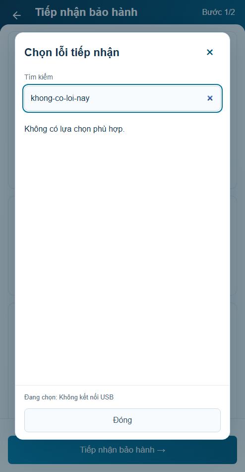
30/30 Node · 45 nhóm browser. Visual chờ user review; integration production chưa kiểm. Ảnh probe cùng494×1000, DPR1; nội dung dài là dữ liệu stress-test. Ảnh thường phía dưới cùng fixture/thời gian.
Báo cáo và lỗi cụ thể · Mở prototype r11
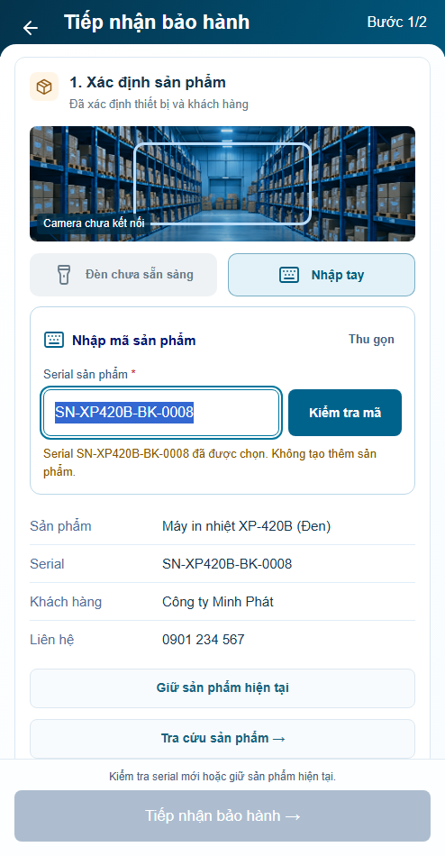
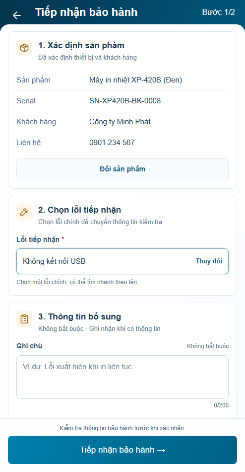
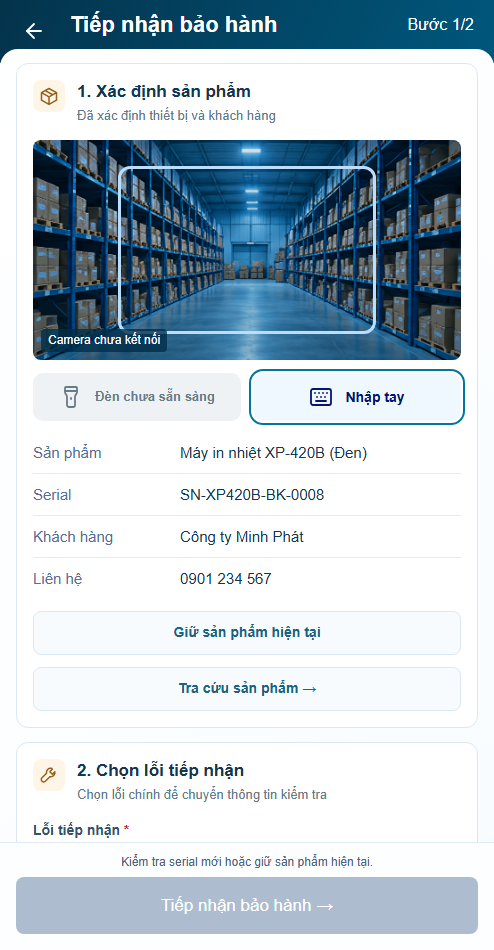
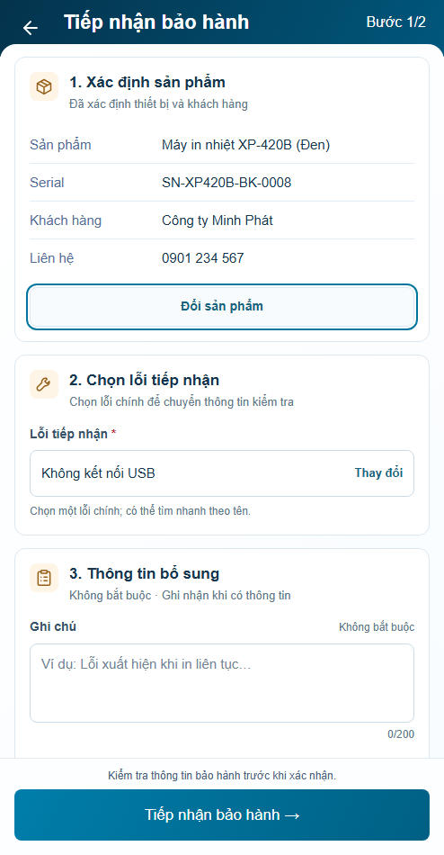
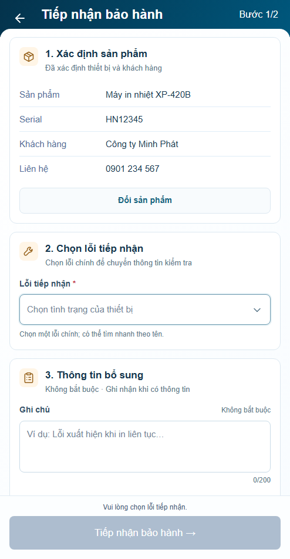
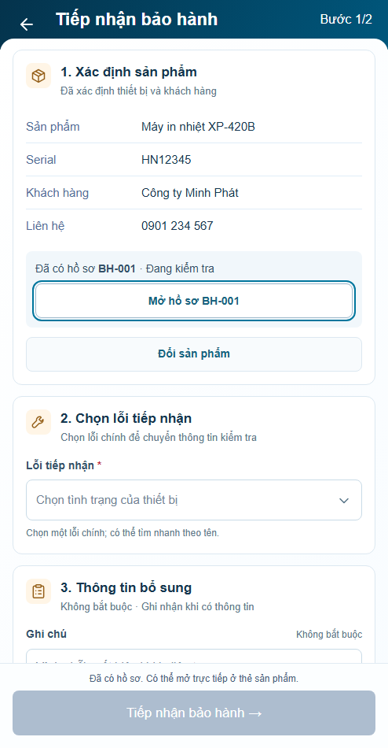

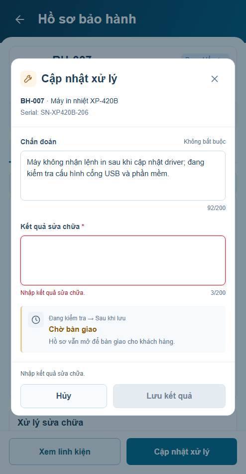
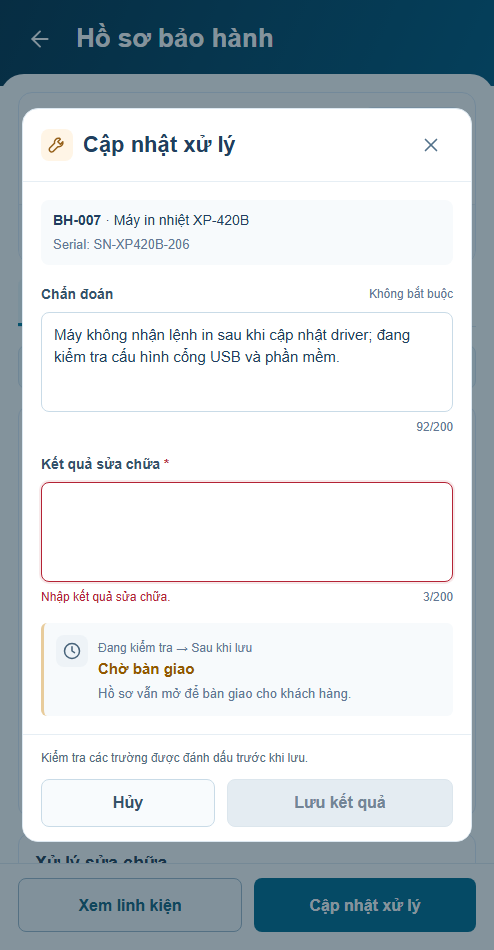
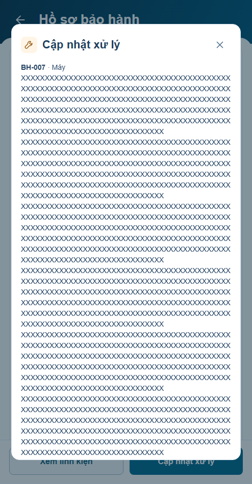
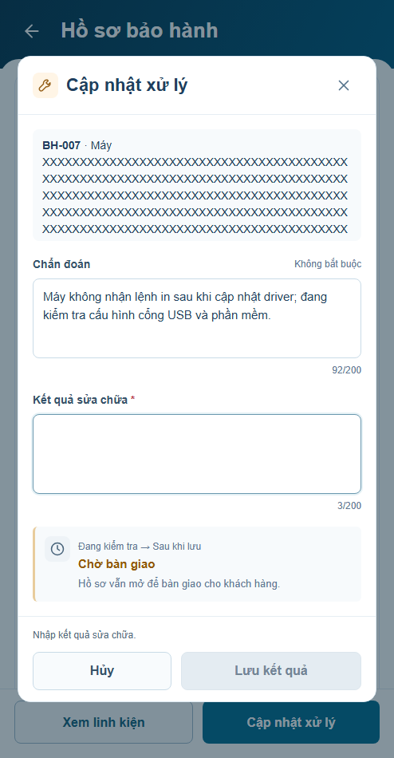

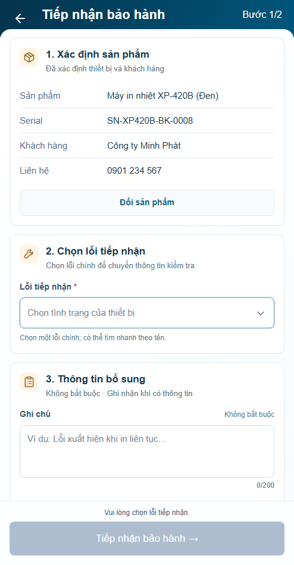
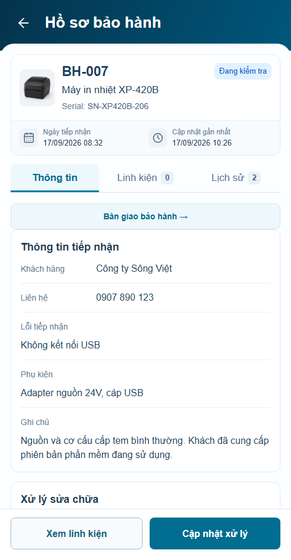
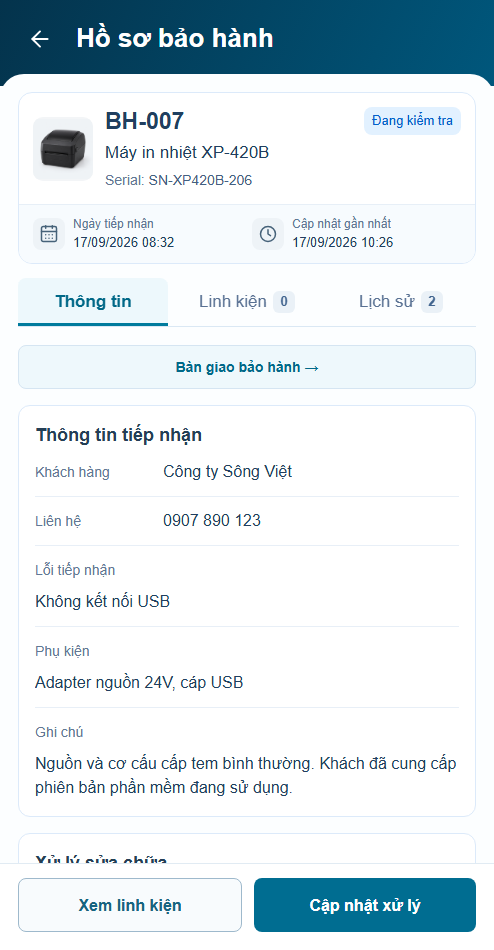
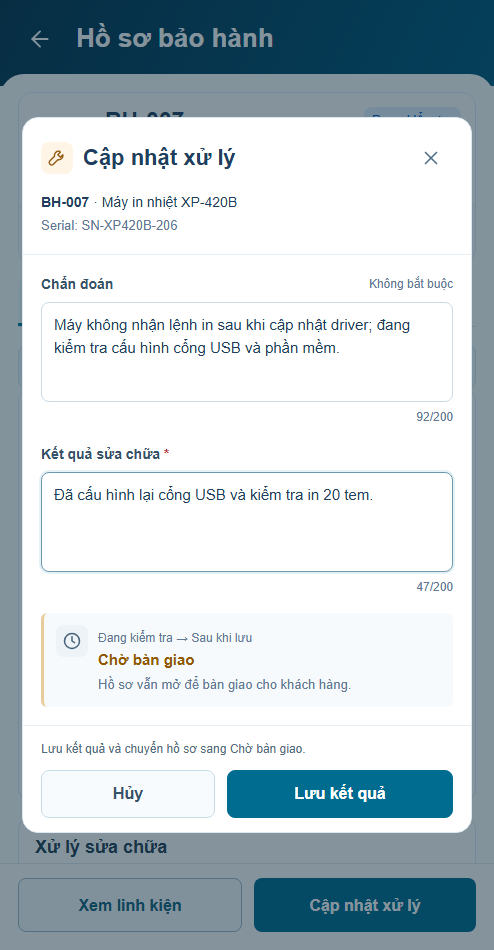
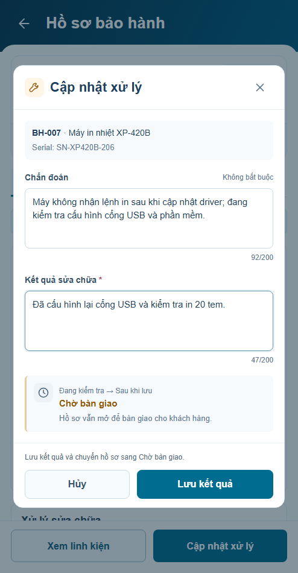
Giữ4panel và các chuẩn shared. Camera/WMS chưa kết nối. Xem báo cáo để biết giới hạn.